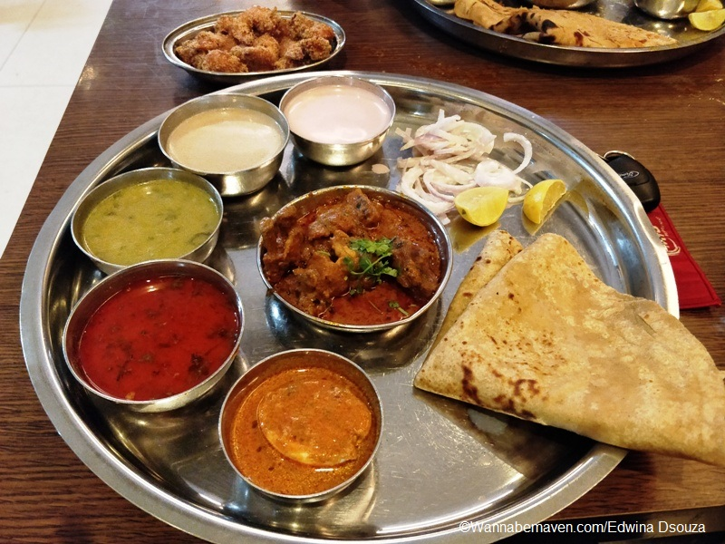
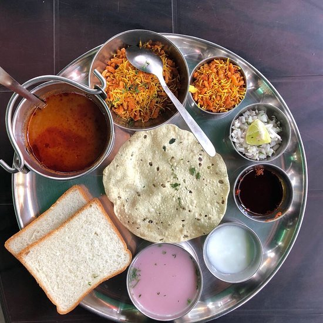
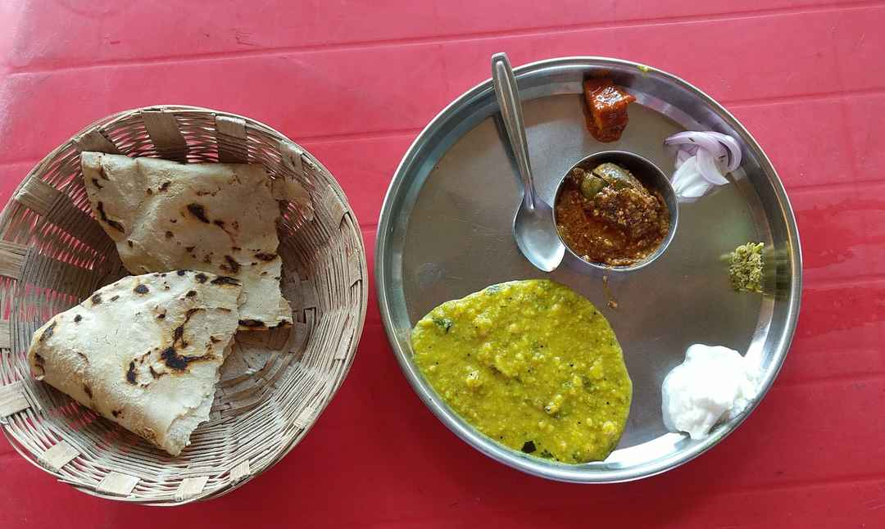
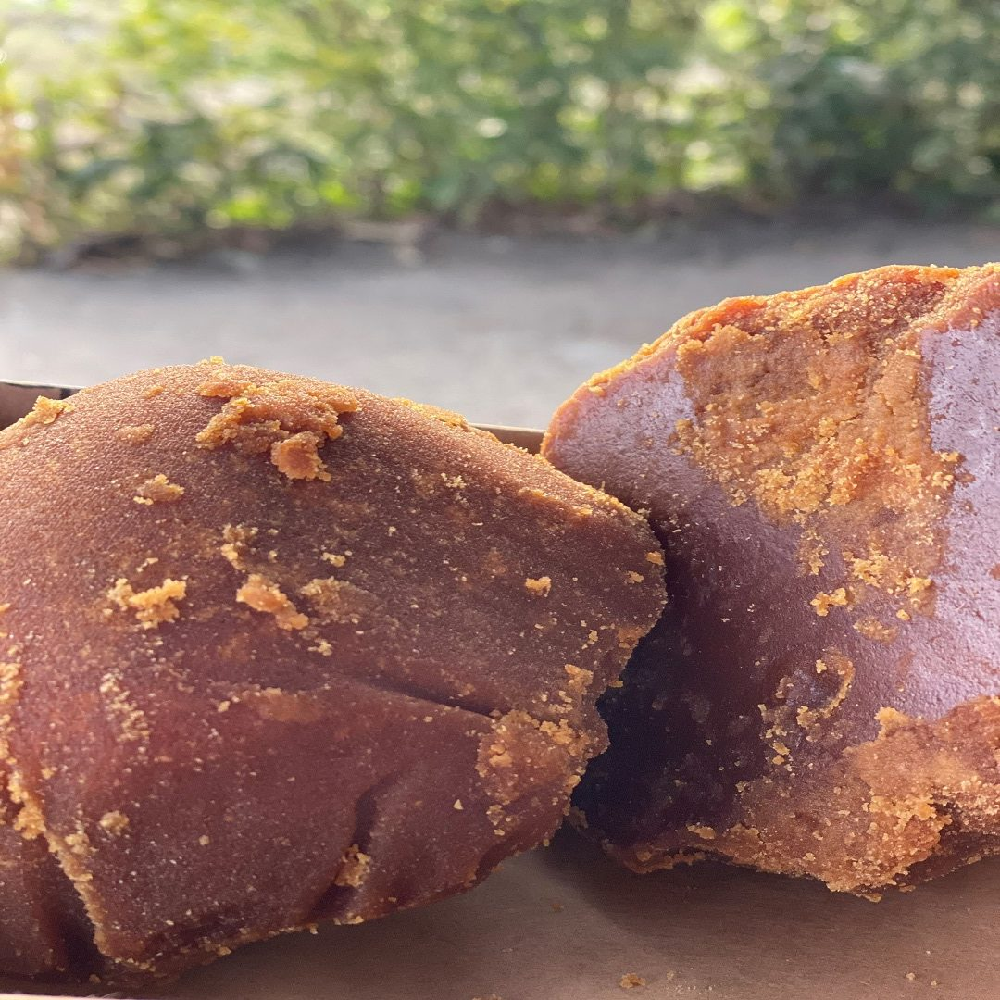

Mutton Thali |
The Kolhapuri cuisine is renowned for its spicy, vibrant and bold flavours, and you should expect no less from this thali.
ndia’s love affair with mutton is no strange fiction. From Kashmir’s Rogan Josh to Bengal’s Kosha Mangsho and Tamil Nadu’s Mutton Sukka, this red meat is a favourite in Indian kitchens, especially, when you are set to prepare something indulgent.
Nothing quite spells decadence as a bowl of good mutton curry. Maharashtra’s Kolhapur has an entire thali dedicated to mutton, replete with various mutton-based delicacies , chief among which are two gravy dishes, the Pandhra Rassa (mutton cooked in white curry) and Tambda Rassa (mutton cooked in red curry). The Kolhapuri cuisine is renowned for its spicy, vibrant and bold flavours, and you should expect no less from this thali. There’s of course a fine way of maintaining balance. The thali is rich and rustic at the same time, and a meat lover’s dream come true.
Hotel Parakh
|
Kolhapuri Misal |
Kolhapuri Misal Pav Recipe is a famous Maharashtra street food . It contains all healthy ingredients in it like sprouted beans, vegetables. They contain good amount of fiber, protein and minerals that keeps you healthy. The dish can be served for break fast or for snack.
In this Kolhapuri Misal Pav we use a many spices, sprouts and potatoes. It is served with some sev and onion on top with the spicy chutney. It is a healthy version of Pav bhaji which is relished in Maharashtra.
Serve the Kolhapuri Usal with some hot pav toasted in butter as a Delicious Tea Time Snack for Kids after School.
Wada Misal
|
Zunka Bhakari |
Jhunka/Pithla
This is the most important dish in the meal. Besan flour is the main ingredient which gets the essence and the flavour from the tadka of onion, black mustard seed, chilli powder, and asafoetida. Instead of onion, you can also add chillies for the taste and the thaska (Thaska means the slight choke you feel after eating a spicy dish. PS - It's nothing to worry about and it means that the dish is well-cooked). Adding water to this makes it liquidy which is then called Pithla.
Bhakri
It's a hand made bread/ roti of jowar or bajra. The dough is shaped with hand and then baked on a tawa. It's best tasted with Jhunka or Thecha.
Vishal Zunka Bhakari
|
Jaggery |
Chikhali is a Village in Karveer Taluka in Kolhapur District of Maharashtra State, India. It belongs to Desh or Paschim Maharashtra region . It belongs to Pune Division . It is located 7 KM towards west from District head quarters Kolhapur. 11 KM from Karveer. 341 KM from State capital Mumbai
|